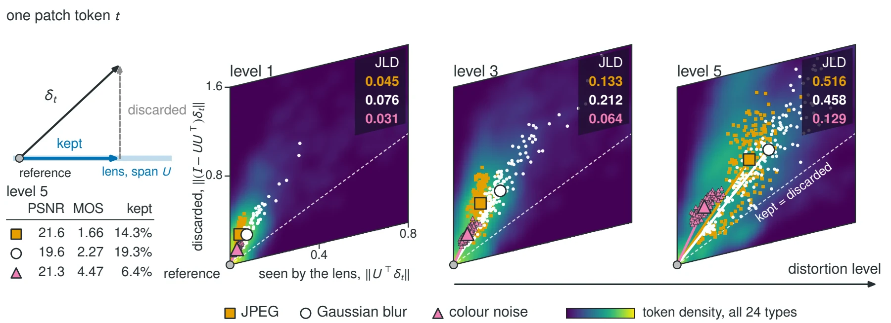

A perceptual distance from a network that only learned to see
Measure an image change with early features, and weight those features by how much the encoder's output responds to them. On four standard databases the result matches human judgements better than distances trained on them.
Thesis. A frozen self-supervised encoder already contains a perceptual distance. It takes one matrix to read it out, and that matrix needs no human labels.
Main technical point. Early patch features see every local change but weight all directions alike. The encoder's output Jacobian tells us which of those directions matter. Keeping the top 64 of 384 raises agreement with human scores on TID2013 from 0.784 to 0.850.
Practical implication. JLD reaches a mean Spearman correlation of 0.926 on four standard databases, above LPIPS, DISTS, PieAPP and DreamSim, and holds its accuracy when image resolution doubles. The fit takes 35 seconds on 100 unlabelled images.
The problem
Every codec, every restoration network and every image generator needs a number that says how different two images look to a person. The oldest answer is pixel error. PSNR is cheap and differentiable, and it treats a change to any pixel like a change to any other. People do not.

Across every pair of TID2013 images with equal PSNR, PSNR picks the one people prefer 51.1% of the time, which is a coin flip.
The standard fix is to compare images in the feature space of a pretrained network and then fit that comparison to human ratings. LPIPS learns a weight per channel from human choices. DISTS fits weights on feature statistics. DreamSim fine-tunes the encoder itself on human triplets. These work, but the fit ties the distance to the data and the resolution it was fitted on. Rescore TID2013 at 512 pixels instead of 256 and DISTS falls from 0.815 to 0.717 Spearman correlation with human scores. LPIPS-VGG falls from 0.757 to 0.661. The ratings are the same. Only the pixel grid changed.
So we asked a narrower question. Does a network that has only learned to see, with no human quality label anywhere in its training, already contain a useful perceptual distance?
Two layers, two halves of the answer
We looked inside a frozen DINOv2-S, a 12-block vision transformer trained by self-supervision. No single depth gives a good distance, and the two ends fail for opposite reasons.
Patch tokens after the first block are local. Each one has looked at its own 14 × 14 patch and interacted once with its neighbours, so a distortion anywhere in the image moves some token. But a token has 384 dimensions, and plain Euclidean distance counts movement along all of them equally. Many of those directions barely affect anything the network computes later. Raw block-1 distance reaches 0.784 on TID2013.
The output of the encoder has the opposite problem. It has decided what matters, and in doing so it has pooled away the spatial detail that blur, blocking and noise act on. Distance between output tokens reaches 0.742.
One end has the locality and the other has the weighting. JLD takes the features from block 1 and the weights from the output. The object that connects a layer to the output is the Jacobian.
The Jacobian lens
Write \(\mathbf h_t\) for the block-1 token at patch \(t\) and \(\mathbf z\) for the encoder's final class token. The Jacobian \(J_t=\partial\mathbf z/\partial\mathbf h_t\) answers a simple question: if we nudge this one patch token by \(\delta\), how far does the output move? To first order, by \(J_t\delta\). Square that and average over natural images and patch positions:
\(\mathbf M\) is a 384 × 384 matrix, and \(\delta^{\top}\mathbf M\,\delta\) is the expected squared output change caused by moving a patch by \(\delta\). Its eigenvectors sort the feature directions by how strongly the output responds to them. A push along the first eigenvector changes the output the most. A push along the last leaves it almost unchanged.
For DINOv2-S this spectrum is steep. The top 64 eigenvectors hold 76.5% of the trace. We keep those 64 as the columns of a matrix \(\mathbf U\) and call it the Jacobian lens. It is one fixed linear projection, shared by every image, every patch position and every resolution.

Fitting it in 35 seconds
We never form a Jacobian. Draw a random Gaussian vector \(v\), take the scalar \(v^{\top}\mathbf z\), and backpropagate once. The gradient that lands on each patch token is \(g_t=J_t^{\top}v\), and averaging \(g_tg_t^{\top}\) over probes gives \(J_t^{\top}J_t\) in expectation. One backward pass yields an estimate at every patch at once.
The shipped lens uses 100 unlabelled DIV2K images, four 224 × 224 crops from each, and eight probes per crop. That is 35 seconds on one A100. There are no image pairs, no distortions and no ratings in the fit. Refitting with fresh crops and probes recovers the same subspace, with an overlap of 0.962.
Human data enters in one place, and we want to be exact about it. We used CSIQ and a development split of KADID-10k to choose among 245 configurations: which block, how many directions, how to weight the global term. TID2013 informed the chroma pre-filter. LIVE, the KADID-10k test references and PIPAL were held out.
The distance
With the lens in hand, the distance has three parts. A fixed pre-filter \(R\) blurs the two chroma channels with a 2-pixel Gaussian and leaves luminance alone, because human vision resolves colour more coarsely than brightness. Then
The first term is the lens term: the root mean square, over patches, of the token change as seen through the lens. Its per-patch values make a map that shows where the distance comes from. The second is a small cosine term on the output. It catches whole-image changes such as a global colour shift, which are spread too thinly over patches to register in the first term.
What the lens throws away
The clearest way to see what the lens does is to split each token's movement into the part it keeps and the part it discards. A change with no preferred direction would keep 64/384, or 16.7%, of its energy.


Take JPEG and colour noise at the strongest level on this image. Their PSNR is nearly identical, 21.6 and 21.3 dB. People rate the JPEG image 1.66 and the noisy one 4.47. The lens keeps 14.3% of the JPEG displacement and 6.4% of the noise displacement, so JLD comes out four times larger for JPEG (0.516 against 0.129), which is the human verdict. Colour noise moves the tokens plenty, but along directions the output ignores. JPEG block edges move them along directions the output uses.
Over all 24 distortion types the lens keeps a median of 10.6% of the displacement energy.
Because the lens is a fixed linear map, the lens term is a true pseudometric and has a local form we can write down: near an image it is a quadratic form in pixel space whose iso-distance contours are ellipses. We checked those ellipses against measured contours on real images, and the radii agree to within 9 to 11%. Around one image the contours are 2.33 times longer along chroma than along blur, so a blur costs far more distance than a colour change of equal pixel energy.
Against LPIPS, DISTS and DreamSim
We evaluated 17 full-reference distances under one protocol. A few rows from the main table:
| Distance | Where the weighting comes from | Mean SRCC | ms per pair |
|---|---|---|---|
| PSNR | None | 0.760 | 1.4 |
| LPIPS-VGG | Channel weights learned from human choices | 0.802 | 10.9 |
| DreamSim | Encoder fine-tuned on human triplets | 0.871 | 51.3 |
| DISTS | Weights on feature statistics, fitted to human scores | 0.900 | 9.9 |
| VSI | Hand-built saliency and gradient model | 0.915 | 9.9 |
| JLD-fast | The encoder's own output sensitivity | 0.911 | 2.5 |
| JLD | The encoder's own output sensitivity | 0.926 | 12.2 |
Mean Spearman correlation with human ratings over TID2013, CSIQ, LIVE and KADID-10k test. Times are on an A100 at 512 × 384.
JLD has the highest mean of the 17 and beats every learned deep distance on each of the four databases.
The ablation says where the gain comes from. All 384 raw directions give 0.772. So do 64 random directions. 64 PCA directions give 0.851, and the 64 lens directions give 0.905. All three subsets have 64 directions, so the gain comes from which ones are kept. The chroma filter and the output term add the rest.

The resolution result is the one we care about most. From 256 to 512 pixels, the lens term reads 0.850, 0.860, 0.845 on TID2013. The same block-1 features without the lens fall from 0.784 to 0.656.
JLD-fast stops the encoder after block 1 and drops the output term. It keeps a mean of 0.911 at 2.5 ms per pair, 4.3 times faster than LPIPS-VGG. Only PSNR is faster.
The construction also carries to video by swapping the encoder. A 16-direction lens on block 2 of a frozen VideoMAE-Base, fitted on 50 unlabelled clips, reaches 0.786 on Waterloo IVC 4K, where VMAF reaches 0.611. And it is not special to DINOv2: fitting a lens to each of 14 frozen encoders, including CLIP and VGG16, improved on raw features in all 14.
Honest edges
- JLD is weaker on the outputs of restoration networks and GANs. It reaches 0.624 on PIPAL, above LPIPS-VGG and every classical measure, but below DISTS (0.704) and DreamSim (0.759).
- Global contrast changes are a weak point: 0.378 on that TID2013 category.
- The lens term cannot see the 320 directions it discards. An optimizer handed JLD as a loss can hide errors there, so training against it needs care. The paper suggests closing that null space with the full matrix \(\mathbf M\) as future work.
- The output term breaks the triangle inequality, rarely: at most 107 triplets per million, by at most 3.6%. If you need a strict pseudometric, use the lens term alone.
- Full JLD at 12.2 ms is slower than DISTS. The speed claim belongs to JLD-fast.
- On held-out video (AVT-VQDB-UHD-1) JLD-video reaches 0.912 and VMAF 0.932. VMAF is trained on human video scores and still leads there.
- Inputs must be spatially aligned.
How to use it
from jld import JLD
metric = JLD.pretrained("full") # or "fast"
distance = metric("reference.png", "distorted.png") # lower means more similarClone the repository and run uv sync. The fitted lens ships inside the package and the DINOv2-S weights download on first use. A few things worth knowing:
- Start with
"fast"if you are scoring many pairs. It gives up 0.015 of mean correlation and takes 2.5 ms per pair instead of 12.2. metric.map(ref, dist)returns the per-patch lens map, which is the first thing to look at when a score surprises you. The project page has six such maps, including two cases JLD gets wrong.metric.distance_tensor(ref, dist)is differentiable. Read the null-space caveat above before using it as a loss.fit_lens.pyfits a lens to another encoder or another image domain from a folder of unlabelled images.
Citation
@article{saini2026jld,
title={JLD: Perceptual Distance through a Jacobian Lens},
author={Saini, Shreshth and Adsumilli, Balu and Bovik, Alan C.},
journal={arXiv preprint},
year={2026}
}